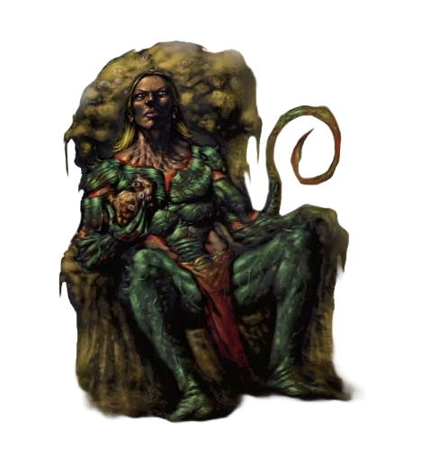

Pathfinder 2e Remastered Eberron
The features that most set Eberron apart are its tone and attitude. The setting combines traditional medieval fantasy with pulp action and dark adventure. Make no mistake—the world of Eberron proudly takes its place among the D&D worlds that have come before, with a cinematic flair and an eye toward the best action-adventure movies ever filmed. The campaign’s story elements were designed with this in mind.
The world of Eberron has a rich history built on heroic deeds, evolving magic, and the wounds of a long, devastating war. In the wake of this Last War, action, adventure, good, evil, and a thousand shades of gray paint the landscape in broad, powerful strokes, and ancient mysteries await discovery so that they too can influence the world and its people.
Magic is built into the very fabric of the setting. It pervades and influences everyday life. It provides certain comforts and conveniences unknown in either the modern world or any world of medieval fantasy. Great cities where castles scrape the sky can be found throughout the continent of Khorvaire, and a thriving aristocracy of merchant families controls much of the world’s economy thanks to the edge given them by the mysterious and rare dragonmarks.
Heroes come in all shapes and sizes, all classes and races. They travel the world, battling villains and recovering fabulous treasure, dealing with over-the-top action, harrowing challenges, cliffhanger situations, narrow escapes, and ominous mysteries that are as likely to shed light on centuries of secrets as they are to threaten the safety of the current day
Note
Tout est en anglais, non pas parce que j'aime pas dire dracogramme, dracolithe ou forgelier (en fait je préfère de loin), mais c'est pour éviter trop de traduction libre en ce qui touche les mécaniques de pathfinder. Faque même si on est au kébekicitte, only english messages will follow...
Ho pis rien de ce qui suit est parole d'évangile, hein! J'm'amuse à faire des conversions en utilisant les PF Tools avec tout ce qui me fais tripper sur Eberron en tête, mais jamais je bouderai parce que vous utilisez pas c'que j'ai fais, en fais j'espère que dans notre One note, vous metterez vos concoctions, question que je vous plagie.
Daelkyr
The daelkyr are the lords of the plane of Xoriat, the Realm of Madness. A daelkyr’s horrible touch may causes disease or corruption, and its very presence can trigger madness and confusion. At least six daelkyr inhabit Eberron.
The daelkyr are immortal and endlessly patient, and their manner of thinking is almost impossible for mortals (or even other outsiders) to understand. For the daelkyr, destroying worlds appears to be a form of art, and until Xoriat and the Material Plane are again coterminous, the daelkyr are indulging their other sordid escapades. Some are poets, musicians, or sculptors, although their works are invariably bizarre and alien to human senses. Their preferred canvas is flesh, for they are the makers of monsters. Dolgrims, dolgaunts, beholders, mind flayers, and other hideous aberrations are the legacy of the daelkyr—living weapons created to destroy life. The subterranean citadel of a daelkyr lord usually supports a garrison of dolgrims, dolgaunt lieutenants, and illithid commanders. Each daelkyr also has its personal creations, reflecting its own aesthetic tastes. One might have a preference for oozes. Another breeds psychic vermin, while a third crafts hideous and deadly plants. Their experiments—creating new races by twisting existing creatures into new forms—take time and can not be represented in game terms. A daelkyr can polymorph a creature into something else easily enough; however, creating a new species of monster such as the dolgrim takes years to accomplish.
The ancient seals placed by the Gatekeepers trap the daelkyr beneath Eberron and keep Xoriat from becoming coterminous, but the daelkyr have not made a concerted effort to destroy these seals. Their motives are inscrutable—above all things, the daelkyr are the lords of the Realm of Madness. Insanity and corruption are the currency they deal in.
A daelkyr often resembles a perfectly formed athletic human, possessing unearthly beauty. Despite this outward appearance, daelkyr are sexless and do not reproduce. Daelkyr speak their own language, and can speak any language.
Byeshk
Mined in the Byeshk and Graywall Mountains bordering Droaam, this rare metal is prized by smiths for use in jewelry and weapons. It has a lustrous purple sheen and is hard and dense. Members of the Gatekeepers seeks actively byeshk weapons whom are particulary effective against most of the creatures and creations of Xoriat.

Grell cities
While most grell encountered in Eberron are feral, rumors persist of larger colonies lurking deep within Khyber, supplying resources and labor for the schemes of the daelkyrs and the Cult of the Dragon Below.

Symbionts
Symbiots are a special kind of creature that straddles the line between magical item and familiars. They are complete creatures, generally capable of surviving apart from a host creature for at least some days. They are generally Tiny or smaller, and physically limited on their own. They survive by joining with a host creature, usually granting the host certain benefits in exchange for the protection afforded by a larger body. This symbiotic relationship usually benefits both parties (though for many the symbiont might better be described as a parasite).
Symbiots rules
Every symbiont has the intelligent trait. Symbionts can’t be crafted by normal means. Because of this, symbionts are always rare. The normal statistics and rules for wearing or using an item of its type still apply to a symbiont. In addition, symbionts have a few statistics other items lack.
Perception and Senses
An symbiont that has any sense of the world around them has a Perception modifier. Symbionts have only the senses listed within their entry, rather than the assumed assortment of senses that most creatures have. A symbiont with a host loses its limited senses and perceives the world through its host's sense.
Communication and Languages
Symbionts almost always have some means of communication. The most common ways are via empathy and telepathy. Telepathy function as it does for any creature, while an empathic connection allows the symbiot to share only emotions. Empathic and telepathic connections are limited either to the symbiot’s host or to a very short distance. If a symbiont understands any languages, they are listed in parentheses in its Communication entry. However, a host always understand its symbiot.
Skills
Symbiots might have skill modifiers for Intelligence, Wisdom, or Charisma-based skills that fit their nature.
Attribute Modifiers
Symbiots have Intelligence, Wisdom, and Charisma modifiers, though as inanimate creature, they don’t have Strength, Dexterity or Constitution entries.
Save
Since they have their own minds, symbiots might be subject to mental effects that require a Will save. However for any other saves, they are considered objects. And while grafted to an host, they are considered attended object regarding possible effect requiring saves.
Symbiots agency
As a default, symbiots have control over all their own abilities, meaning an symbiot weapon could deny the effects of its powers if it so chose, and symbiots perform their own activations when they wish. Symbiots can typically use 3 actions per turn, acting on their host’s turn. These actions don’t count toward their host’s 3 actions. They have a reaction if any of their activations requires one.
The symbiots have different agendas according to their particularities and functions. However, they all share the same apprehension, or even disgust, at thwarting plans devised by the Daelkyr or their agents. Thus, using symbiots against the spawn of Xoriat is a risky operation.
Beyond denying beneficial effects and communicating their displeasure, symbiots can usually influence or hinder their hosts in many ways. If the symbiot is a weapon or armor, it can at least adopt a disruptive tendency to make its host take a –2 circumstance penalty to associated checks and DCs, much as if the host were using an improvised weapon or tool. But symbiot can have a greater effect, such as seizing control of its host’s body for a time, the symbiot’s entry includes those abilities.
Investing a symbiot
You open your mind and invest your blood to a symbiot as you don it. Once you’ve Invested the symbiot, you benefit from its constant abilities as long as you meet its other requirements (for most invested items, the only other requirement is that you must be wearing the item). This investiture lasts until you remove the symbiot. You can invest no more than 10 items or symbiots per day. If you remove an invested symbiot, it loses its investiture. The item still counts against your daily limit after it loses its investiture. You reset the limit during your daily preparations, at which point you Invest your Items or symbiots anew. If you’re still wearing a symbiot you had invested the previous day, you can typically keep them invested on the new day, but they still count against your limit.
However, unlike a magical item, the investiture of a symbiote taxes the host's metabolism. During the first few hours, the host experiences side effects, which will also be felt for a short withdrawal period if the host removes an invested symbiot.
Living Breastplate
The traditional armor of the daelkyr, living breastplates are occasionally found in the Cults of the Dragon Below, where they are considered holy relics.
Living Breastplate
ITEM 15
Communication Empathy 15 feet, Telepathy (with host only)
Skills Deception +27, Diplomacy +22, Intimidation +27
Int +1, Wis +4, Cha +6
Will +27
Living Breastplate don't talk much. Their personality could often be described as lazy, grumpy but compliant companion. Host often become lazy over time as a biproduct of their mutual synergy. During the investiture, tendrils on the inside burrow into its host. Making investing and separation one of the worst a symbiots could impose.
Living Breastplate tend to adopt disruptive tendencies (turning into a simple breastplate and giving a -2 item penalty to saves and AC) if its host avoid reasonable combats. A Host may make the breastplate compliant again by spending 2 actions to convince the plate to stop brooding. If the host succeeds a diplomacy or an intimidation check DC 37 the breastplate whines but return to normal for an hour. Only a compliant Living Breastplate will use the Survival Instinct reaction.
Survival Instinct
Tentacle Whip
Another creation of the daelkyr, the tentacle whip is a serpentine weapon designed to channel the corrupting touch of its master to a distant foe.
Tentacle Whip
ITEM 10
Communication Empathy 15 feet, Telepathy (with host only)
Skills Deception +18, Diplomacy +15, Intimidation +18
Int +1, Wis +2, Cha +4
Will +18
Fold/Unfold
Extended touch
Filth of Blood The tentacle whip pollute the blood of it host with its toxin giving its body a natural resistance to poison. The host gain poison resistance 5.
Poisonous Strike If the host makes a critical strike with the whip, the target is affected by the Poisonous Sweat that the whip exude. Hosts of Tentacle whip are immune to Poisonous Sweat.
Poisonous Sweat (poison) Saving Throw DC 27 Fortitude; Maximum Duration 4 rounds; Stage 1 2d6 poison damage and clumsy 2 (1 round);